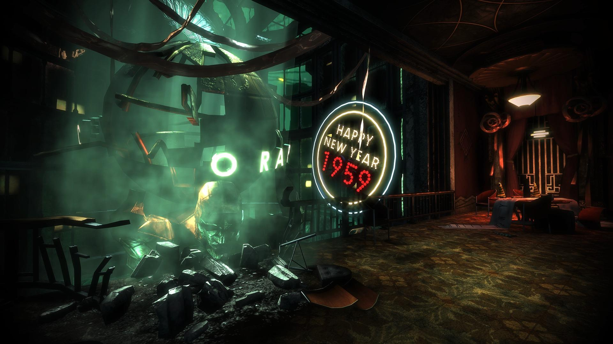

Or what's left at least
This website is to serve as both an invitation and a warning to all who visit. If you're a fan of horror, action, and tragic tales this title is a must. However, those who can't sit through a horror movie or are generally squeamish should stay above water! As you fight through this dystopian nightmare and uncover the truth of its demise, will you save what little remains or take the last scraps of power for yourself? Not that you really had a choice coming here, it was a stroke of luck you survived the plane crash on the way to meet your family in England. Now all you can do is trust the few sane citizens you meet and work your way back to the surface. Just remember, "We all make choices, but in the end our choices make us".
Now, if I've gotten your attention here is my advice.
- Put on your favorite headphones
- Dim the lights
- Grab your trusty pipe wrench
- Wreathe your fist in lighting